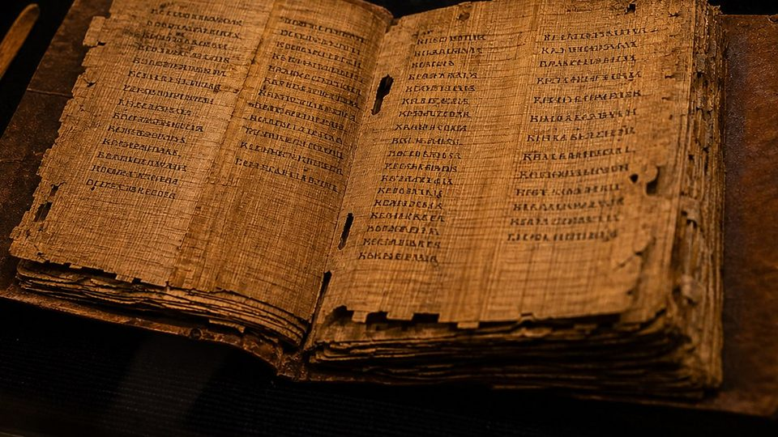
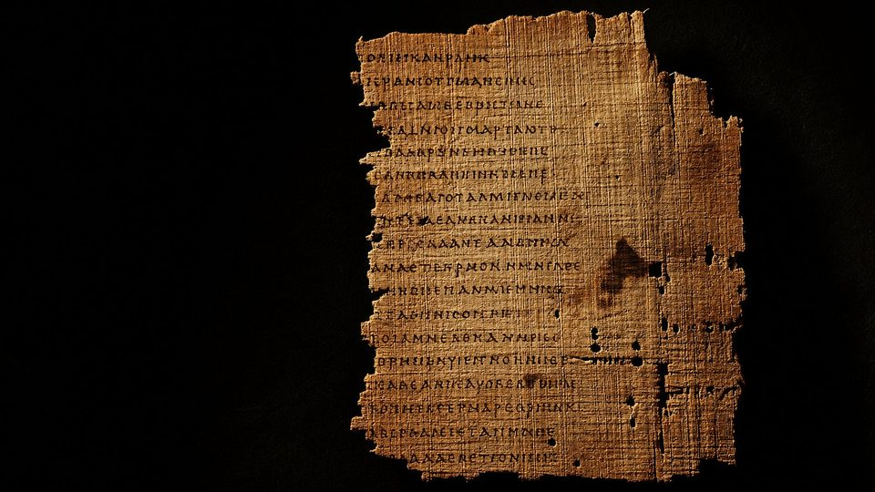
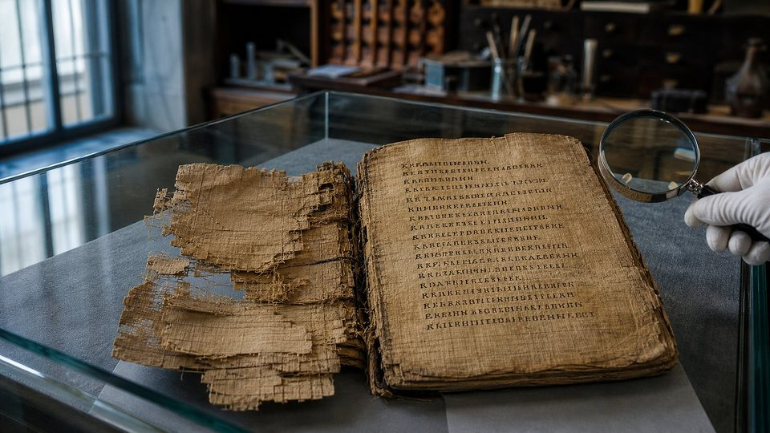
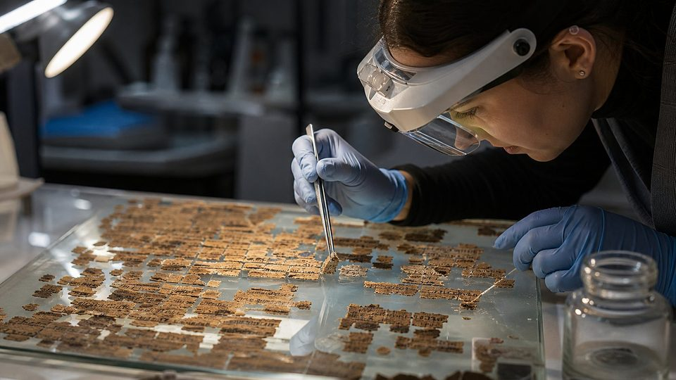
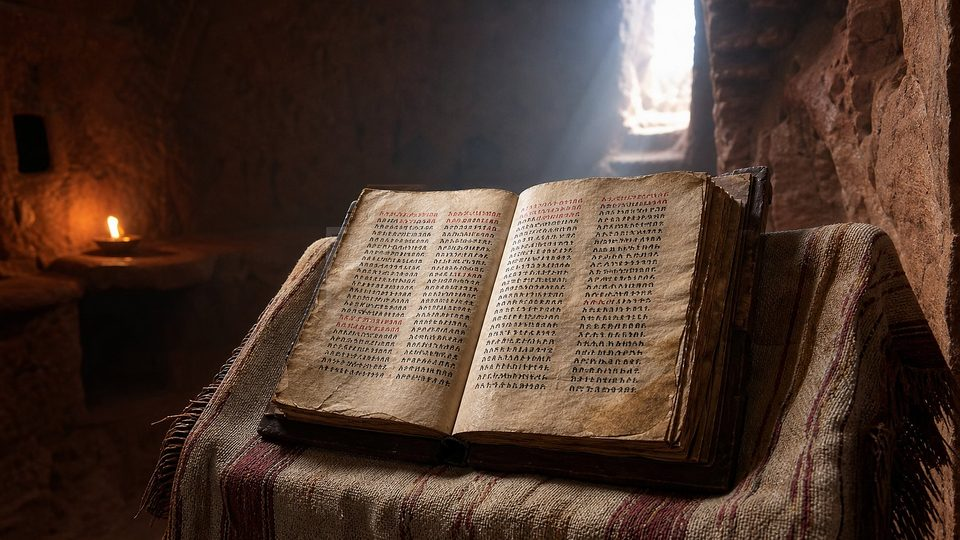
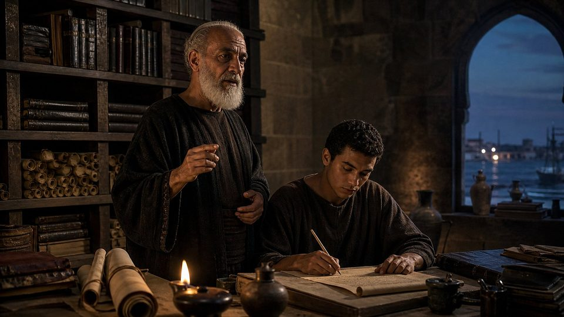

Reconnu comme Écriture
Les 39 livres des Écritures hébraïques et les 27 livres du Nouveau Testament : les textes transmis dans les salles 01 à 05 de ce musée.
IIIᵉ s. av. J.-C. – IVᵉ s. ap. J.-C.
Nag Hammadi, Évangiles de Thomas, de Marie et de Judas, Livre d'Hénoch, Pasteur d'Hermas : des textes d'histoire, clairement distingués de l'Écriture.
Salle d'histoire, et non d'Écriture. Les textes présentés ici ne font pas partie de la Bible. Chacun porte un badge Apocryphe ou Non canonique. Les passages bibliques cités pour comparaison portent le badge Canonique.
Le mot « canon » vient du grec κανών (« règle », « baguette à mesurer »). Il désigne la liste des livres reconnus comme Écriture. Le mot « apocryphe » vient de ἀπόκρυφος (« caché », « secret »).
Les 39 livres des Écritures hébraïques et les 27 livres du Nouveau Testament : les textes transmis dans les salles 01 à 05 de ce musée.
Écrits souvent attribués à un personnage biblique (Thomas, Marie, Judas, Hénoch), rédigés plus tard et jamais reçus comme Écriture par l'ensemble des communautés.
Écrits chrétiens anciens et respectés, comme le Pasteur d'Hermas, lus à titre d'édification mais jamais placés au rang des Écritures.
Pourquoi les présenter ? Parce qu'ils éclairent l'histoire des premiers siècles et montrent, par contraste, avec quel soin les communautés ont distingué l'Écriture des autres écrits. Les livres dits « deutérocanoniques » (Tobie, Judith, Maccabées…), transmis par la Septante, sont évoqués dans la salle 07.
Deux ans avant la découverte de Qumrân, des paysans égyptiens mettent au jour une bibliothèque entière, enfouie au IVe siècle.
En décembre 1945, au pied des falaises du Djebel el-Tarif, près de la ville de Nag Hammadi, des paysans cherchent du sabakh, une terre riche utilisée comme engrais. Ils trouvent une jarre scellée contenant douze codex de papyrus reliés de cuir, ainsi que des feuillets d'un treizième.
Ces livres renferment 52 écrits traduits du grec en copte au IVe siècle. La plupart étaient perdus : Évangile de Thomas, Évangile de Philippe, Évangile de Vérité, Apocryphe de Jean… On y trouve même un passage de La République de Platon.
Les papiers usagés collés dans les reliures portent des dates des années 340 : la bibliothèque a été copiée vers le milieu du IVe siècle, puis cachée. Les codex sont aujourd'hui conservés au Musée copte du Caire.

L'explorateur écossais James Bruce rapporte en Europe des manuscrits guèzes du Livre d'Hénoch, perdu en Occident depuis l'Antiquité.
Carl Reinhardt achète au Caire un codex copte du Vᵉ siècle : il contient l'Évangile de Marie. Sa publication n'aura lieu qu'en 1955.
Grenfell et Hunt publient trois fragments grecs de paroles attribuées à Jésus. On ne saura qu'après 1945 qu'ils appartiennent à l'Évangile de Thomas.
Le papyrus Rylands 463 (IIIᵉ siècle) livre un passage grec de l'Évangile de Marie.
Douze codex de papyrus et des feuillets d'un treizième : 52 écrits, presque tous inconnus, dont l'Évangile de Thomas.
Dans la grotte 4, des fragments araméens du Livre d'Hénoch (4Q201-4Q212) prouvent son ancienneté.
Près de Maghagha (Moyenne-Égypte), un codex copte est découvert : le futur Codex Tchacos, qui contient l'Évangile de Judas.
Après des années chez des marchands, le codex brisé en près de mille fragments est restauré et publié. Il doit rejoindre le Musée copte du Caire.
Décembre 1945. Au pied des falaises du Djebel el-Tarif, près de Nag Hammadi, en Haute-Égypte, des paysans creusent la terre pour y chercher un engrais naturel. Leur pioche heurte une grande jarre de terre cuite, scellée. À l'intérieur : une douzaine de livres de papyrus reliés de cuir, enfouis depuis plus de quinze siècles. Ce sont des traductions coptes de textes grecs plus anciens, copiées au quatrième siècle. Parmi eux, un écrit va faire le tour du monde : l'Évangile selon Thomas. Il ne raconte ni la naissance, ni les miracles, ni la mort de Jésus. C'est un recueil de cent quatorze paroles, souvent énigmatiques, qui lui sont attribuées. Trois fragments grecs en avaient déjà été retrouvés à Oxyrhynque, sans que personne ne sache encore à quel livre ils appartenaient.
D'autres textes ont resurgi de la même façon. L'Évangile de Marie, acheté au Caire en 1896, ne nous est parvenu qu'à moitié : dix pages sur dix-neuf. L'Évangile de Judas, découvert dans les années 1970 et publié en 2006, n'existe qu'en un seul exemplaire, brisé en près de mille fragments. Ces écrits sont précieux pour l'historien. Ils montrent la diversité des courants qui se réclamaient du christianisme aux deuxième et troisième siècles, en particulier les courants gnostiques. Mais ils ne sont pas restés en dehors de la Bible par accident. Ils sont plus tardifs que les écrits des apôtres, leur enseignement s'en écarte, et ils n'ont jamais été reçus par l'ensemble des communautés. L'apocryphe éclaire l'histoire. Il ne remplace pas le canon.
Pour chaque texte : sa date, ses manuscrits, un résumé détaillé, un extrait traduit et les raisons pour lesquelles il n'a pas été retenu.

114 paroles attribuées à Jésus, sans récit de sa vie, de sa mort ni de sa résurrection.
Résumé détaillé du contenu
L'ouvrage se présente comme une suite de « paroles secrètes » introduites par la formule « Jésus dit ». Environ la moitié ont un équivalent, plus ou moins proche, dans Matthieu, Marc ou Luc : paraboles du semeur, de la graine de moutarde, du festin ; le prophète méprisé dans sa patrie ; l'aveugle qui guide un aveugle.
Les autres paroles sont propres à Thomas et souvent énigmatiques. Elles insistent sur la connaissance de soi (« Quand vous vous connaîtrez, vous serez connus »), sur un Royaume déjà présent « au-dedans de vous et au-dehors de vous », sur le retour à l'origine et sur la figure du « solitaire » qui se détache du monde.
Il n'y a ni naissance, ni miracle raconté, ni passion, ni résurrection : le salut vient de la juste interprétation des paroles. La dernière parole (114), sur Marie devenant « mâle » pour entrer dans le Royaume, montre l'écart avec les Évangiles canoniques.
Le début, dans le papyrus grec d'Oxyrhynque 654 (vers 250)
Οὗτοι οἱ λόγοι οἱ [ἀπόκρυφοι οὓς ἐλά]λησεν Ἰη(σοῦ)ς ὁ ζῶν κ[αὶ ἔγραψεν Ἰούδα ὁ] καὶ Θωμᾶ.
Voici les paroles [secrètes] qu'a prononcées Jésus le Vivant, et qu'a écrites [Judas, appelé] aussi Thomas.
καὶ εἶπεν· [ὃς ἂν τὴν ἑρμηνεί]αν τῶν λόγων τούτ[ων εὕρῃ, θανάτου] οὐ μὴ γεύσηται.
Et il a dit : « [Celui qui trouvera l'interpré]tation de ces paroles ne goûtera pas [la mort]. »
[λέγει Ἰη(σοῦ)ς· μὴ παυσάσθω ὁ ζη]τῶν τοῦ ζητεῖν ἕως ἂν εὕρῃ, καὶ ὅταν εὕρῃ [θαμβηθήσεται, καὶ θαμ]βηθεὶς βασιλεύσει, κα[ὶ βασιλεύσας ἀναπα]ήσεται.
[Jésus dit : « Que celui qui cher]che ne cesse pas de chercher jusqu'à ce qu'il trouve ; et quand il aura trouvé, [il sera stupéfait ; et, stu]péfait, il régnera ; et, [ayant régné, il trouvera le re]pos. »
Entre crochets : lettres perdues, restituées d'après la version copte (restitution courante, d'après H. Attridge). Sur le papyrus, le nom de Jésus est abrégé.
Pourquoi n'est-il pas dans la Bible ?

Un dialogue après la résurrection, dont la moitié des pages a disparu.
Résumé détaillé du contenu
Le texte s'ouvre au milieu d'un dialogue : le Sauveur répond aux questions des disciples sur la matière et sur le péché, puis les envoie annoncer l'Évangile du Royaume avant de les quitter.
Les disciples sont abattus et ont peur. Marie (que la tradition identifie à Marie-Madeleine, bien que le texte dise seulement « Marie ») les réconforte. Pierre lui demande de leur rapporter les paroles du Sauveur qu'elle seule connaît. Elle raconte alors une vision.
Après une lacune de quatre pages, on lit la montée de l'âme qui franchit quatre « puissances » hostiles (Ténèbres, Désir, Ignorance, Colère) en répondant à leurs questions. André et Pierre contestent vivement ces enseignements ; Lévi prend la défense de Marie. Les disciples partent enfin prêcher.
Les thèmes (âme prisonnière de la matière, ascension à travers des puissances) rattachent ce texte aux courants gnostiques du IIᵉ siècle.
Un passage (Codex de Berlin, page 8) · traduit du copte
« Prenez garde que personne ne vous égare en disant : “Le voici !” ou “Le voilà !” Car le Fils de l'homme est au-dedans de vous. Suivez-le ! Ceux qui le cherchent le trouveront. »
L'original est en copte, une langue égyptienne écrite avec un alphabet dérivé du grec. Le passage fait écho à Luc 17:21 et Matthieu 24:23, mais leur donne un sens intérieur.
Pourquoi n'est-il pas dans la Bible ?
Aucune numérisation officielle librement consultable à ce jour.

Un texte connu par Irénée vers 180, retrouvé en un seul exemplaire brisé en près de mille fragments.
Résumé détaillé du contenu
Le texte se présente comme « le récit secret de la révélation que Jésus a faite à Judas Iscariote » pendant huit jours, trois jours avant la Pâque.
Jésus y rit des disciples qui rendent grâce à Dieu, car pour l'auteur, ce dieu n'est qu'une puissance inférieure. Il révèle à Judas seul un vaste système de mondes célestes, d'éons et d'anges (Barbélo, l'Autogène, Saklas…), typique de la pensée gnostique dite « séthienne ».
Le récit s'achève brutalement : Judas reçoit de l'argent des grands prêtres et leur livre Jésus. Il n'y a ni crucifixion ni résurrection.
Irénée de Lyon, vers 180, signalait déjà ce livre comme une « histoire inventée » par un groupe gnostique (Contre les hérésies, I, 31, 1).
La phrase la plus discutée (page 56) · traduite du copte
« Toi, tu les surpasseras tous. Car tu sacrifieras l'homme qui me sert d'enveloppe. »
En 2006, la première publication présentait un Judas « héros », ami privilégié de Jésus. D'autres spécialistes, notamment April DeConick (2007), ont contesté plusieurs traductions : Judas y est appelé « treizième démon » et son destin reste tragique.
Pourquoi n'est-il pas dans la Bible ?
Aucune numérisation officielle librement consultable à ce jour.
Huit phrases. À vous de dire si chacune vient de la Bible ou d'un écrit non canonique. Attention, il y a des pièges !
La leçon : un texte n'est pas canonique parce qu'il « sonne juste ». Les communautés ont retenu les écrits qui remontaient aux prophètes, aux apôtres et à leurs proches, et qui étaient reçus partout.
Ces deux livres n'ont rien de secret. Ils ont été lus, copiés, parfois cités. Leur histoire montre que l'estime d'un livre ne suffit pas à en faire une Écriture.

Résumé détaillé. L'ouvrage, attribué à Hénoch, « le septième depuis Adam » (Genèse 5), réunit cinq livres :
À Qumrân, une dizaine de manuscrits araméens (4Q201 – 4Q212) contiennent des parties de tous ces livres, sauf les Paraboles. Le livre fait partie de la Bible de l'Église orthodoxe éthiopienne, mais ni le canon hébreu ni les autres Églises ne l'ont reçu.
Voir les fragments de Qumrân · Bibliothèque numérique Leon LevyΠροεφήτευσεν δὲ καὶ τούτοις ἕβδομος ἀπὸ Ἀδὰμ Ἑνὼχ λέγων· ἰδοὺ ἦλθεν κύριος ἐν ἁγίαις μυριάσιν αὐτοῦ ποιῆσαι κρίσιν κατὰ πάντων καὶ ἐλέγξαι πάντας τοὺς ἀσεβεῖς περὶ πάντων τῶν ἔργων ἀσεβείας αὐτῶν ὧν ἠσέβησαν καὶ περὶ πάντων τῶν σκληρῶν ὧν ἐλάλησαν κατ᾽ αὐτοῦ ἁμαρτωλοὶ ἀσεβεῖς.
« C'est aussi pour eux qu'Hénoch, le septième depuis Adam, a prophétisé en disant : “Voici, Jéhovah est venu avec ses saintes myriades, pour exercer le jugement contre tous et pour convaincre tous les impies de toutes les œuvres d'impiété qu'ils ont commises, et de toutes les paroles dures que les pécheurs impies ont prononcées contre lui.” »
Le titre grec κύριος (« Seigneur ») désigne ici Dieu : le musée rend le nom divin par « Jéhovah », selon sa convention.
« Et voici, il vient avec des myriades de saints pour exercer le jugement contre tous, pour faire périr les impies et convaincre toute chair de toutes les œuvres d'impiété qu'ils ont commises, et de toutes les paroles dures que les pécheurs impies ont prononcées contre lui. »
Un fragment araméen de ce passage a été retrouvé à Qumrân (4Q204). Jude cite une prophétie qu'il juge vraie, sans faire pour autant du livre entier une Écriture.
Résumé détaillé. Hermas, ancien esclave devenu chrétien à Rome, raconte ses révélations en trois parties : 5 Visions, 12 Préceptes et 10 Similitudes (paraboles). Une femme âgée, qui rajeunit au fil des visions, représente l'Église ; elle lui montre une tour en construction, faite de pierres plus ou moins dignes d'y entrer. Puis un ange vêtu en berger, le « Pasteur », lui donne des commandements moraux et des paraboles.
Le message central est un appel pressant à la repentance : une seconde chance est encore offerte aux croyants qui ont péché, mais le temps presse.
Le Pasteur a été recopié à la fin du Codex Sinaiticus, après le Nouveau Testament, signe de son prestige au IVe siècle.
Voir le Pasteur dans le Codex SinaiticusTexte intégral du Précepte 1 · grec, puis traduction française
Πρῶτον πάντων πίστευσον, ὅτι εἷς ἐστὶν ὁ θεός, ὁ τὰ πάντα κτίσας καὶ καταρτίσας, καὶ ποιήσας ἐκ τοῦ μὴ ὄντος εἰς τὸ εἶναι τὰ πάντα, καὶ πάντα χωρῶν, μόνος δὲ ἀχώρητος ὤν. Πίστευσον οὖν αὐτῷ καὶ φοβήθητι αὐτόν, φοβηθεὶς δὲ ἐγκράτευσαι. Ταῦτα φύλασσε, καὶ ἀποβαλεῖς πᾶσαν πονηρίαν ἀπὸ σεαυτοῦ καὶ ἐνδύσῃ πᾶσαν ἀρετὴν δικαιοσύνης καὶ ζήσῃ τῷ θεῷ, ἐὰν φυλάξῃς τὴν ἐντολὴν ταύτην.
« Avant toute chose, crois qu'il n'y a qu'un seul Dieu, qui a créé et organisé toutes choses, qui a fait passer toutes choses du néant à l'existence, qui contient tout et que seul rien ne peut contenir. Crois donc en lui et crains-le, et, le craignant, maîtrise-toi. Observe ces choses : tu rejetteras loin de toi toute méchanceté, tu revêtiras toute vertu de justice et tu vivras pour Dieu, si tu gardes ce commandement. »
Un texte bref et parfaitement orthodoxe… qui n'est pourtant jamais entré dans le canon.
Canon de Muratori, lignes 73 à 80 · latin (orthographe normalisée), puis traduction française
Pastorem vero nuperrime temporibus nostris in urbe Roma Hermas conscripsit, sedente cathedra urbis Romae ecclesiae Pio episcopo fratre eius; et ideo legi eum quidem oportet, se publicare vero in ecclesia populo neque inter prophetas, completo numero, neque inter apostolos in finem temporum potest.
« Quant au Pasteur, Hermas l'a écrit tout récemment, de notre temps, dans la ville de Rome, alors que son frère, l'évêque Pie, occupait le siège de l'Église de Rome. C'est pourquoi il convient certes de le lire, mais on ne peut pas le lire publiquement à l'assemblée, ni parmi les prophètes, dont le nombre est complet, ni parmi les apôtres, jusqu'à la fin des temps. »
Ce manuscrit latin du VIIIe siècle, conservé à la Bibliothèque ambrosienne de Milan, recopie une liste généralement datée de la fin du IIe siècle (certains la placent au IVe).
Aucun concile n'a « inventé » la Bible. Les communautés ont reconnu, peu à peu et largement d'un bout à l'autre du monde romain, les écrits qui remontaient aux origines.
Le livre remonte-t-il à un prophète, à un apôtre ou à l'un de leurs proches compagnons ?
A-t-il été écrit à l'époque des témoins, et non un siècle plus tard ?
Son enseignement s'accorde-t-il avec les Écritures hébraïques et les autres écrits apostoliques ?
Est-il lu dans les assemblées de toutes les régions, et non dans un seul cercle ?
Ordres de grandeur Fourchettes couramment admises ; les dates de rédaction des apocryphes, comme celles de certains livres du Nouveau Testament, restent discutées. Barres de rédaction : échelle de l'an 0 à l'an 200.

Il affirme qu'il y a quatre Évangiles, « ni plus, ni moins », et dénonce l'Évangile de Judas comme une invention.
La plus ancienne liste connue des écrits lus à Rome : elle écarte le Pasteur d'Hermas, « écrit récemment ».
Il distingue les écrits reconnus partout de ceux qui sont discutés.
Il classe les livres : reconnus, discutés, inauthentiques (dont Hermas) et hérétiques (dont Thomas).
Sa 39e Lettre festale énumère les 27 livres du Nouveau Testament et range Hermas parmi les livres utiles aux débutants.
Il reprend la même liste de 27 livres : il confirme un usage déjà établi, il ne l'invente pas.
Certains textes non canoniques n'ont rien de secret. Le Livre d'Hénoch, attribué à l'arrière-grand-père de Noé, raconte la chute des anges veilleurs et des visions du jugement. Il était lu au tournant de notre ère : une dizaine de manuscrits araméens en ont été retrouvés dans la quatrième grotte de Qumrân. La lettre de Jude en cite même une phrase. Pourtant, ni le canon hébreu ni la grande majorité des Églises ne l'ont reçu comme Écriture. Seule l'Église éthiopienne l'a conservé dans sa Bible, en langue guèze, et c'est grâce à elle que le livre nous est parvenu en entier. Le Pasteur d'Hermas, écrit à Rome au deuxième siècle, était si apprécié qu'on l'a recopié à la fin du Codex Sinaiticus, après le Nouveau Testament.
Mais une liste romaine, le Canon de Muratori, généralement datée de la fin du deuxième siècle, précise qu'on peut le lire en privé, et non dans l'assemblée, car il a été écrit récemment. Le critère est clair : ce qui fait autorité, c'est ce qui remonte aux apôtres et à leurs proches. En 367, Athanase, évêque d'Alexandrie, dresse la liste des vingt-sept livres du Nouveau Testament que nous connaissons, et il range Hermas parmi les livres utiles aux débutants, non parmi les Écritures. Le canon ne s'est donc pas décidé lors d'un concile tardif. Il s'est formé par l'usage, dans les communautés, autour des textes reconnus depuis les origines. Ce qui n'y est pas entré reste un témoignage d'histoire, que ce musée vous invite à découvrir, en le distinguant clairement de l'Écriture.
Pendant que ces débats se tenaient, les Écritures étaient déjà traduites en grec, en latin, en syriaque. La salle suivante raconte la Septante, la Vulgate et la Peshitta.
Salle 07 · La Septante et les grandes traductions